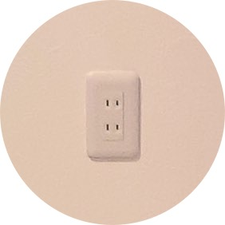
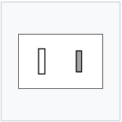
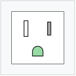
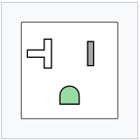
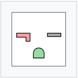
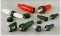
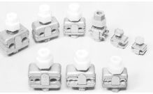
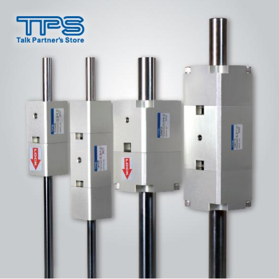

What is Connector ?
コネクタ (connector) とは、電線と電線または電線と電気器具とを接続するための部品。
電線と電線を接続し、ひとつの回路にするために用いられる部品・器具である。
Type
日本では主にこの4種類となる
一般的な家庭用
100Vコンセント

一般的な家庭用100V
コンセント（JIS C
8303 2極コンセント
15A 125V）平行型
OA機器・白物家電用
アース端子付コンセント

OA機器・白物家電等の設置箇所に
使われるアース端子付コンセン
ト（JIS C 8303 2極接地極付
コンセント 15A 125V）平行型
エアコン設置箇所等に
用いられるコンセント

エアコン設置箇所等に用いられる
大容量コンセント（JIS
C83032極接地極付コンセ
ント 20A125VIL型・平行型共用
200Vエアコン設置箇所等に
用いられるコンセント

一般的な家庭用100V
コンセント（JIS C
8303 2極コンセント
15A 125V）平行型
Ranking
コネクタの流通量ランキング
| Distribution Volume Ranking | 説明 | |
|---|---|---|
| 一位 単極コネクタ |  | 100A〜400A カラーも「黒・白・赤・青・緑」と取り揃えてます。 配電盤などにご利用頂けるようにパネルタイプの受電・送電タイプがあります。 メーカー・取扱い企業： 株式会社泰和電器 技術部 |
| 二位 PJコネクター |  | 古川電機製作所の『PJコネクター』は、適切な締付け力が得られるコネクターです。 ナットに被せられているプラスチックキャップ適性締付けトルクまで 締付けられると破壊します。締付け不足、締付けすぎがありません。 接触圧力が高く、圧縮接続に勝る接触圧で電線を接続します。 |
| 三位 エアユニット |  | 固定の革命！「クイッククランパー」シリーズに、エアによる解放機構を装備した「エアユニット」遠隔操作が可能 エアがONでアンクランプするため、制御が容易 |